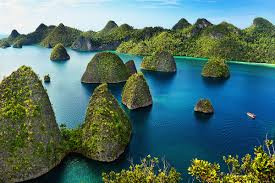

Wisata Indonesia
Indonesia memiliki berbagai macam wisata yang cantik dan bersejarah
| No | Gambar | Nama Wisata | Penjelasan |
|---|---|---|---|
| 1 | Candi Borobudur | Candi Buddha terbesar di dunia. | |
| 2 |  | Raja Ampat | Merupakan surga tersembunyi di ujung timur Indonesia, dengan keindahan alam bawah laut yang luar biasa dan keanekaragaman hayati. |
| 3 | |
Diamond Beach | Pantai yang terletak di Pulau Bali, lebih tepatnya berada di Kecamatan Nusa Penida, Kabupaten Klungkung. |
| 4 | Wisata Gunung Bromo | Menjadi ikon pariwisata dengan segala keindahannya, terletak di Jawa Timur, gunung berapi aktif yang menawarkan pemandangan dramatis berupa siluet yang dikelilingi lautan pasir. |